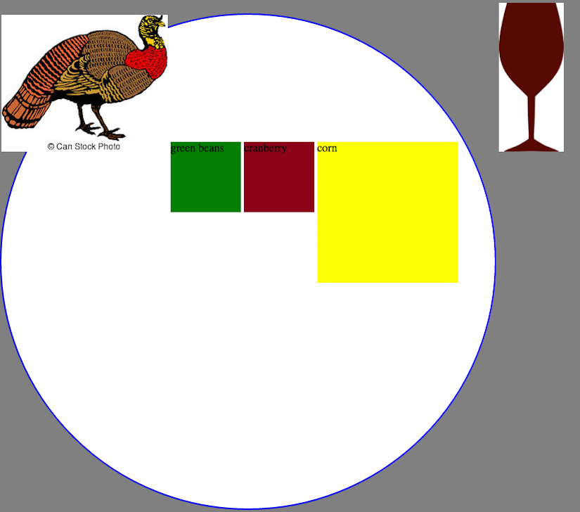
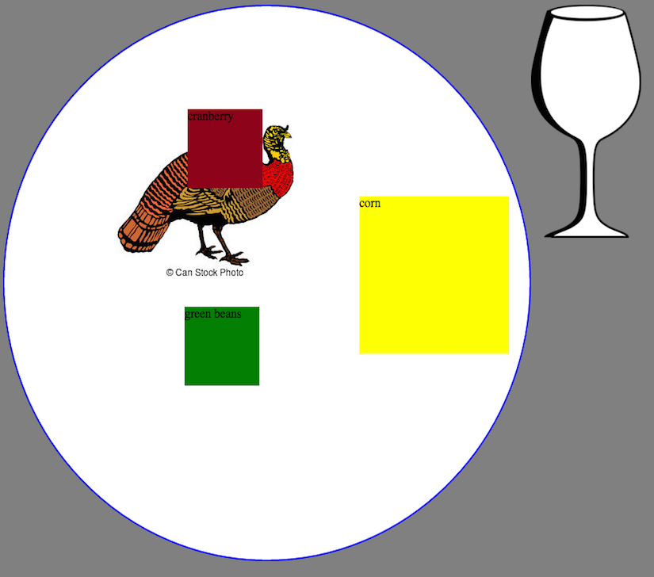

0.3.6 CSS for Dinner - 11/27/2015
Positioning elements using CSS takes practice! Unlike working with color or font-family, sometimes the CSS I write has unexpected results. The least that I can do on my path to mastery is knowing what each type does—so I’ve written a little story. Perhaps it will help you too!
You’re at Thanksgiving dinner. it’s not a casual Friendsgiving potluck, but instead a little more formal with a host or hostess who’s spent all day making an elaborate meal for you. They have crafted main dishes and sides and wine pairings. It’s delightful.
You sit down and they serve you a plate full of delicious food and pour you a spectacular glass of red wine. Each item is in it’s static position—exactly where’s it’s been put on the plate. But you just love to mix your turkey with cranberry sauce, so you move the cranberry sauce to a new relative position right next to the turkey. Unfortunately, the host has also put creamed corn on your plate (which is gross) so you move it to the absolute edge of your plate where it can’t touch anything else. As the evening proceeds and everyone gets fuller and drunker, you’re gesticulating wildly and knock over your wine glass. Perhaps they should have afixed it to the table where you couldn’t move it and make a mess!
 
For another resource, check out this rad 10 step tutorial.